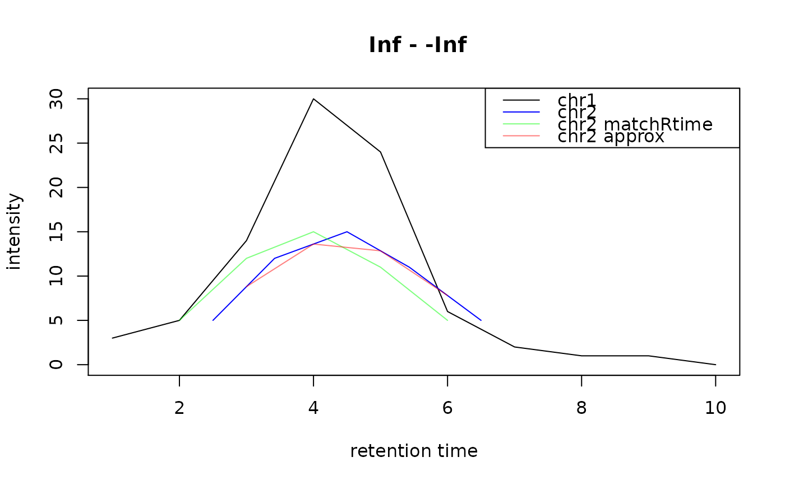

R/methods-Chromatogram.R, R/methods-Chromatograms.R
align-Chromatogram.RdAlign chromatogram x against chromatogram y. The resulting chromatogram
has the same length (number of data points) than y and the same retention
times thus allowing to perform any pair-wise comparisons between the
chromatograms. If x is a Chromatograms() object, each Chromatogram in
it is aligned against y.
Parameter method allows to specify which alignment method
should be used. Currently there are the following options:
method = "matchRtime" (the default): match data points in the first
chromatogram (x) to those of the second (y) based on the difference
between their retention times: each data point in x is assigned to the
data point in y with the smallest difference in their retention times
if their difference is smaller than the minimum average difference between
retention times in x or y.
method = "approx": uses the base R approx function to approximate
intensities in x to the retention times in y (using linear
interpolation). This should only be used for chromatograms that were
measured in the same measurement run (e.g. MS1 and corresponding MS2
chromatograms from SWATH experiments).
# S4 method for Chromatogram,Chromatogram align(x, y, method = c("matchRtime", "approx"), ...) # S4 method for Chromatograms,Chromatogram align(x, y, method = c("matchRtime", "approx"), ...)
| x |
|
|---|---|
| y |
|
| method | |
| ... | additional parameters to be passed along to the alignment functions. |
Chromatogram (or Chromatograms) representing x aligned
against y.
chr1 <- Chromatogram(rtime = c(1, 2, 3, 4, 5, 6, 7, 8, 9, 10), intensity = c(3, 5, 14, 30, 24, 6, 2, 1, 1, 0)) chr2 <- Chromatogram(rtime = c(2.5, 3.42, 4.5, 5.43, 6.5), intensity = c(5, 12, 15, 11, 5)) plot(chr1, col = "black")## Align chr2 to chr1 without interpolation res <- align(chr2, chr1) rtime(res)#> [1] 1 2 3 4 5 6 7 8 9 10intensity(res)#> [1] NA 5 12 15 11 5 NA NA NA NA## Align chr2 to chr1 with interpolation res <- align(chr2, chr1, method = "approx") points(rtime(res), intensity(res), col = "#ff000080", type = "l")legend("topright", col = c("black", "blue", "#00ff0080", "#ff000080"), lty = 1, legend = c("chr1", "chr2", "chr2 matchRtime", "chr2 approx"))